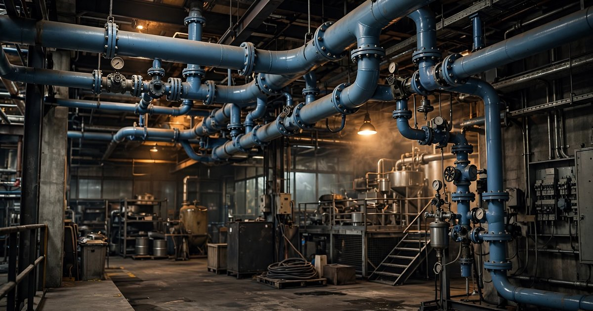

Continuous Compressed Air Leak Monitoring SaaS for Manufacturing Plants
American manufacturers consume roughly 104 terawatt-hours of electricity per year just to run air compressors, at a cost exceeding $9.3 billion at current industrial rates. The U.S. Department of Energy has documented for decades that 20-30% of that compressed air escapes through leaks before it reaches a single tool. The entire $853 million leak detection industry is built around sending a human with a handheld camera to walk the floor every 6-12 months. Between visits, new leaks appear, old fixes fail, and the plant drifts right back to baseline. Nobody sells always-on monitoring. The permanent ultrasonic sensor that would catch a leak within hours instead of months costs $40.

The Problem
Compressed air is the fourth utility. After electricity, water, and natural gas, it is the most widely used energy source in manufacturing. An ASME study published in 2024 found that compressed air accounts for 8.5% of total industrial energy consumption in the United States. A DOE assessment of the market for compressed air efficiency services found that 70% of all US manufacturing plants operate compressed air systems and that 50% of those plants have opportunities for large energy savings with low project costs.
The scale of waste is staggering and well-documented across decades of DOE research. According to the Compressed Air Challenge, a DOE-supported initiative, the average industrial plant loses 20-30% of its compressor output to leaks, with experienced auditors reporting that poorly maintained plants routinely hit 40-50% and some exceed 80%. A single quarter-inch leak at 100 PSI costs a facility more than $8,000 per year in wasted electricity, according to the Compressed Air and Gas Institute, and most plants carry dozens of active leaks at any given time, each one compounding the loss.
Here is a number nobody has published before, derived from combining two public datasets that apparently no one has thought to multiply together. EIA data through March 2026 shows US industrial electricity sales running at approximately 1,043 terawatt-hours on a rolling twelve-month basis, at an average industrial rate of 8.94 cents per kilowatt-hour, and if compressed air consumes 10% of industrial electricity (the DOE's own figure from its assessment of compressed air efficiency services), that works out to roughly 104 TWh powering compressors at a cost exceeding $9.3 billion per year. At a 25% average leak rate (the midpoint of DOE's range), $2.33 billion in electricity is wasted annually just pushing air through holes in pipes and fittings that nobody is watching.
Yet according to ifm electronic, citing DOE data, only 35% of manufacturers conduct any leak prevention program at all. And of the plants that do get audited, Dr. Kelly Kissock, who has performed over 500 compressed air assessments, notes that "it is not uncommon for me to go into plants and see that compressed air auditors have tagged a lot of leaks, and years later the tags are still there." The DOE's own Industrial Assessment Centers routinely identify savings opportunities averaging $130,000 per facility, yet only about half of those recommendations get implemented in the first year.
The Gap in the Market
The compressed air leak detection market hit $853 million in 2025, according to Future Market Insights, and is projected to reach $1.19 billion by 2035 at a 3.4% compound annual growth rate, yet every dollar of that market flows through the periodic, manual detection model where a human walks the floor with a handheld instrument and nobody offers continuous, automated, always-on leak monitoring as a software service.
| Company | What They Sell | What's Missing |
|---|---|---|
| Teledyne FLIR | Acoustic imaging cameras ranging from the Si1-LD at approximately $8,500 to the Si2-Pro at $27,590, each built around a 124-microphone MEMS array that overlays a real-time sound heatmap on visible-light video for best-in-class handheld leak detection. | Fundamentally a handheld camera that requires a technician to carry it through the plant, which means detection happens only when someone is physically present and walking the floor. Between scheduled audits, leaks accumulate undetected with no continuous data feed, no trend analysis, and no automated alerting to maintenance teams. |
| Atlas Copco AIRScan | Audit-as-a-service program that dispatches certified technicians to walk the plant with ultrasonic detectors, tag every leak they find, and deliver a comprehensive report estimating annual savings from repairs, offered by a company that also manufactures and sells the compressors themselves. | Operates on the same periodic audit model as everyone else, and Atlas Copco faces a structural tension between its incentive to find leaks and its incentive to sell customers a bigger compressor to compensate for the lost capacity, while the audit itself remains a point-in-time snapshot whose report goes stale the day after the technician walks out the door. |
| SDT International | Belgian company with more than 50 years in industrial ultrasound that manufactures hardware-focused detection instruments like the SDT340 and LUBExpert, sold through a global distributor network to maintenance professionals. | Exclusively handheld instruments with no IoT platform, no cloud dashboard, and no continuous monitoring capability whatsoever, meaning all the acoustic data collected during an inspection lives on the device itself until someone physically downloads it to a laptop. |
| SONOTEC | German manufacturer of precision ultrasonic sensors and flow meters that sells OEM sensor modules designed for integration into third-party industrial monitoring systems and custom equipment builds. | Provides components rather than a complete monitoring solution, so while SONOTEC supplies the transducer element, someone else still has to build the platform, the wireless connectivity layer, the analytics engine, and the maintenance workflow integration that turns raw sensor data into actionable work orders. |
| Augury | Venture-backed machine health platform ($294M raised) that uses vibration and ultrasonic sensors combined with AI analytics for predictive maintenance on rotating equipment including motors, pumps, fans, and compressor units, available through Azure Marketplace. | Focused specifically on machine health rather than compressed air distribution, meaning Augury monitors whether the compressor itself is about to fail but ignores the miles of piping, hundreds of fittings, and dozens of end-use quick-connect points where the actual leaks occur throughout the plant. |
| Everactive | Well-funded startup ($114M raised) that builds battery-free IoT sensors powered by ambient energy harvesting from indoor light, thermal gradients, and mechanical vibration, with steam trap monitoring as the company's core production application. | Successfully proved the concept of always-on industrial sensing without batteries, but remains focused entirely on steam trap monitoring rather than compressed air, and the acoustic detection of turbulent airflow through pipe leaks requires a fundamentally different sensor modality than the temperature-based monitoring used for steam trap failure detection. |
The pattern across the entire competitive landscape is unmistakable: the incumbents sell expensive hardware designed for periodic, manual audits while the well-funded IoT startups chase adjacent problems like rotating equipment health and steam systems. Fraunhofer IPA and the University of Stuttgart have developed a prototype using flow sensors and an intelligent algorithm for automated compressed air leak detection, demonstrating that the concept works in production environments. But as the researchers themselves note: "there is no market-ready product yet." The continuous compressed air leak monitoring platform does not exist.
The Solution
A permanently installed sensor network that monitors compressed air distribution lines 24/7, connected to a SaaS platform that detects leaks within hours, quantifies their cost, generates work orders, and tracks repair outcomes over time.
1. Permanent ultrasonic sensor nodes ($89 per node at launch, target $40 at scale): MEMS ultrasonic microphones in a compact, industrial-rated housing (IP67, -20°C to 70°C). Each node monitors a section of pipe, fitting, or connection point. Battery life: 3+ years on a single lithium cell at one reading per minute. The sensor doesn't need to "see" the leak acoustically the way a handheld camera does. It needs to detect the characteristic broadband ultrasonic signature of turbulent airflow through an orifice, which is well-characterized in the literature and detectable with a single MEMS microphone at close range (within 2 meters).
2. LoRa gateway ($249 per zone, one per ~50,000 sq ft): Collects data from up to 200 sensor nodes via LoRa wireless. Backhauls to the cloud over the plant's existing Wi-Fi or Ethernet. No cellular dependency (most plants already have internal network infrastructure). One gateway covers a typical manufacturing bay; large facilities might need 3-5.
3. Cloud platform ($0.10 per sensor node per day, billed monthly): Real-time dashboard showing leak status for every monitored point. Automatic severity classification (estimated leak size in CFM and $/year based on system pressure and local electricity rate). Trend analysis showing leak rate over time, with before/after verification when repairs are logged. Alert routing to maintenance teams via email, SMS, or CMMS integration. The platform calculates verified savings: "This facility had 847 CFM of total leakage on January 1. After 47 repairs tagged in the system, leakage is now 312 CFM. Verified annual savings at current rates: $83,460."
4. CMMS integration layer (included in subscription): Bi-directional API connections to SAP PM, Maximo, UpKeep, Fiix, and other maintenance management systems. When the platform detects a new leak above the cost threshold, it automatically creates a work order in the plant's existing CMMS with the location, estimated severity, and recommended repair action. When the technician closes the work order, the platform re-reads the sensor data to verify the repair worked. No repair verification means no claim of savings.
The Math: Periodic vs. Continuous
Take a mid-size automotive parts manufacturer in Ohio running 200,000 square feet of production floor with three 200-HP compressors operating two shifts (4,160 hours/year), consuming 1,340,000 kWh/year in compressed air electricity alone. At Ohio's industrial rate of $0.0981/kWh (EIA, March 2026 YTD), that single plant spends $131,454/year just keeping its compressors running.
Scenario A: Annual audit (industry standard)
Plant hires an Atlas Copco AIRScan or independent auditor once a year at a cost of $3,000-5,000, and the auditor typically identifies around 45 leaks totaling 380 CFM. Maintenance crew fixes 60% of tagged leaks (the easy ones: loose fittings, worn hoses) within 90 days, temporarily dropping the total leak rate from 28% to 16%. But new leaks start appearing within weeks of the audit, and the ASME study analyzing 740 identified leaks across multiple plants found that more than 50% occur at hoses, damaged threads, connectors, and fittings, which are cost-effective to fix but which nobody catches once they reappear until next year's scheduled walk-through. By month 6, the leak rate is back above 20%, and by month 11 it has crept to 26% again, yielding an average leak rate across the year of roughly 22% and an annual electricity waste of $28,920 on top of the $4,000 audit fee, for a total cost of the problem approaching $32,920 per year.
Scenario B: Continuous monitoring
Plant installs 120 sensor nodes at critical points (pipe junctions, regulator stations, quick-connect manifolds, aging valve banks) at a hardware cost of 120 × $89 = $10,680, which amortized over a three-year battery life comes to $3,560/year, plus four gateways at 4 × $249 = $996 amortized to $332/year, and a SaaS subscription of 120 nodes × $0.10/day × 365 = $4,380/year, bringing the total annual cost to $8,272.
The system detects new leaks within hours of their onset, and maintenance gets a work order the same shift. Instead of catching 45 leaks once a year, the system catches 3-5 leaks per week and feeds them into the regular maintenance workflow before they compound. Leak rate never climbs above 12% because problems are fixed before they cascade, yielding an average annual leak rate of roughly 10% and electricity waste of $13,145. At a total monitoring cost of $8,272 per year, the combined expense comes to $21,417, representing annual savings of $11,503 versus the periodic audit approach and a 139% ROI in year one on a single mid-size plant.
The ASME study found that each CFM of leak repair saves an average of $156 per year, with a repair cost of $30 per CFM. At those economics, the monitoring system pays for itself if it catches just 53 additional CFM of leakage per year that would have gone undetected between audits. For a plant with 120 monitored points, that's less than half a CFM of incremental detection per sensor per year.
Revenue Model
| Revenue Stream | Amount | Notes |
|---|---|---|
| Sensor hardware (per node) | $89 | 70% gross margin at scale. MEMS microphone + LoRa radio + battery + IP67 enclosure. BOM target: $22 at 10K units. |
| Gateway hardware (per zone) | $249 | 65% margin. LoRa concentrator + Ethernet/Wi-Fi backhaul. |
| SaaS monitoring subscription | $0.10/node/day ($3/node/month) | 85%+ margin. Dashboard, alerting, trend analysis, savings verification. Billed monthly. |
| CMMS integration premium | $500/month per plant | SAP PM, Maximo, UpKeep connectors. Higher-touch customers. |
| Energy audit reports (quarterly) | $1,500/report | Detailed compressed air system analysis with verified savings documentation. Useful for ISO 50001 compliance and utility rebate applications. |
Unit economics on a 120-node plant: Hardware revenue at initial sale: 120 × $89 + 4 × $249 = $11,676 at ~68% gross margin = $7,940 gross profit. Annual recurring SaaS: 120 × $3/month × 12 = $4,320/year at 85% margin = $3,672 gross profit/year. CMMS integration: $6,000/year at 80% margin = $4,800 gross profit/year. Customer acquisition cost via trade shows, channel partners, and energy auditor referrals: ~$4,000. LTV at 5-year average with subscription retention: $7,940 + ($3,672 + $4,800) × 5 = $50,300, yielding an LTV-to-CAC ratio of 12.6x.
Market Size
TAM: The US Census Bureau's Statistics of US Businesses counted 239,265 manufacturing firms in 2022. The DOE estimates 70% operate compressed air systems: approximately 167,500 facilities. At an average deployment of 80 sensor nodes per plant and $3/node/month in SaaS: $4.8B in cumulative hardware + $483M/year in recurring SaaS revenue. Adding CMMS integration and audit services: ~$600M total annual addressable.
SAM: Focus on plants with annual compressed air electricity costs above $50,000 (roughly those with 100+ HP of installed compressor capacity), where the ROI case is clearest. This is approximately 40,000 facilities in the US. At 80 nodes per plant: $230M SaaS/year.
SOM (year 3): 400 plants with average 100-node deployment generating cumulative hardware revenue of approximately $4M and SaaS ARR of 40,000 nodes × $36/year = $1.44M ARR, plus CMMS integration and audit services bringing total revenue to roughly $2.4M, representing 1% penetration of SAM.
Why Now
Industrial electricity prices are climbing fast and show no sign of leveling off. EIA data for Q1 2026 shows the average US industrial electricity rate at 8.94 cents/kWh year-to-date, up from 8.28 cents in the same period of 2025, representing an 8% year-over-year increase that makes every single CFM of leaked compressed air more expensive to waste and therefore makes the monitoring ROI more compelling without any change in the product itself.
MEMS ultrasonic sensors have crossed the cost threshold that makes permanent installation rational. Five years ago, an industrial-grade ultrasonic sensor module cost $150-300 each, but the explosion of MEMS manufacturing capacity driven primarily by automotive and consumer electronics demand has pushed comparable modules below $15 in volume, a price point at which permanently installing a sensor at every pipe junction, regulator station, and quick-connect manifold becomes economically viable rather than reserved for only the most critical connections.
ISO 50001 adoption is accelerating and creating demand for exactly this kind of verified data. A peer-reviewed analysis of 83 ISO 50001-certified manufacturing facilities found that certified plants achieve annual energy performance improvement rates of 4.1% in the first year and maintain 3.4% improvement rates twelve years after implementation. As more manufacturers pursue ISO 50001 certification (driven by customer requirements, especially from European OEMs), they need documented, verifiable energy management data. Continuous compressed air monitoring produces exactly the kind of measured-and-verified savings documentation that ISO 50001 auditors require.
The DOE is funding compressed air efficiency directly and creating a natural partner channel. The DOE announced $52.5 million for Industrial Assessment Centers that help manufacturers improve efficiency, and the IAC program has now delivered nearly 20,000 assessments containing over 145,000 improvement recommendations, with compressed air leak repair ranking among the most common and highest-ROI measures these university-based teams identify during their plant visits. The fundamental problem is that the IACs diagnose the issue and then walk away, leaving no system in place to ensure the recommended repairs actually persist beyond the first quarter after the assessment, which is precisely the gap that continuous monitoring fills.
Startup Costs
| Category | Cost | Notes |
|---|---|---|
| Sensor hardware design + firmware (6 months) | $220K | 1 embedded systems engineer + 1 RF engineer + 1 acoustics/DSP specialist. MEMS microphone selection, LoRa radio integration, IP67 enclosure design, battery optimization, FCC Part 15 certification. |
| Cloud platform + dashboard (6 months, parallel) | $200K | 2 full-stack engineers + 1 data engineer. Real-time ingestion pipeline, leak detection algorithms, severity scoring, trend analytics, alerting engine, CMMS API integrations. |
| Initial manufacturing run (2,000 sensors + 50 gateways) | $65K | Contract manufacturing. Enough hardware for ~20 pilot plants. |
| Pilot program (20 plants, subsidized hardware) | $40K | Free or discounted sensors for first 20 plants in exchange for usage data, testimonials, and case study rights. Travel for installation support. |
| FCC certification + testing | $15K | Part 15 compliance for LoRa radio module. Required for commercial sale. |
| Trade show presence (year 1) | $30K | PACK EXPO, Hannover Messe USA, Best Practices in Compressed Air Conference. Booth, demo units, travel. |
| Operating buffer (12 months) | $50K | Cloud infrastructure, component inventory, support staffing, insurance. |
| Total | $620K |
Limitations
The $9.3 billion annual compressed air electricity cost is derived from DOE's "10% of industrial electricity" figure applied to EIA's rolling twelve-month industrial consumption data. The DOE figure dates to an assessment published in the mid-2010s and covers a wide range of plant types. Some industries (food processing, automotive assembly, glass manufacturing) are well above 10%; others (chemicals, primary metals) may be below it. The aggregate figure is directionally correct but carries meaningful uncertainty at the industry-segment level.
The 20-30% average leak rate is well-documented across multiple DOE, ASME, and industry sources, but "average" hides enormous variance. A well-maintained aerospace facility with a dedicated compressed air engineer may run at 5-8%. A 40-year-old stamping plant with original galvanized pipe may be at 45%. The monitoring ROI is strongest for the majority of plants in the middle of this distribution. Plants that already manage compressed air rigorously (perhaps 10-15% of the market) may not see sufficient marginal improvement to justify the sensor investment.
Single-point MEMS ultrasonic detection at close range is well-proven in controlled environments. Industrial floors with high ambient noise (stamping presses, CNC machines, pneumatic tools) present a harder signal-to-noise challenge. The Fraunhofer IPA approach uses flow sensors rather than acoustic sensors for this reason. A production system may need adaptive filtering or dual-modality sensing (acoustic + flow) in the noisiest environments, which adds cost and complexity to the sensor node.
The assumption that maintenance teams will actually repair detected leaks promptly is critical to the ROI case. Dr. Kissock's observation that tagged leaks sit unrepaired for years is sobering. If the CMMS integration creates work orders that pile up unaddressed because the maintenance team is already overwhelmed, continuous monitoring generates continuous data but not continuous savings. The platform needs to be paired with organizational commitment to act on what it finds.
Strongest Counterargument
Teledyne FLIR could add an IoT sensor to their product line next quarter. They already have the acoustic expertise (124-microphone MEMS arrays), the industrial customer base, the brand recognition, and the distribution network. Their Si-series cameras are the de facto standard for compressed air audits. Adding a permanently mounted sensor that feeds data to a FLIR cloud platform would be a natural product extension, and they could price it at a loss to block a startup while upselling their premium cameras for detailed diagnostics. FLIR had $1.9 billion in revenue (pre-Teledyne acquisition) and the R&D budget to build this in months, not years.
The counterpoint: FLIR's business model depends on selling $8,500-$28,000 cameras, and a $89 permanent sensor that reduces the need for periodic camera-based audits would cannibalize their highest-margin product line in what amounts to the classic innovator's dilemma playing out in industrial instrumentation. FLIR's sales team is compensated on camera deals, their channel partners are compensated on camera deals, and their marketing positions the Si-series as the definitive solution to compressed air waste, so launching a cheap IoT alternative that implicitly argues "you don't need the camera as often" would require the company to undermine the value proposition that generates the bulk of their compressed air revenue. Large companies with profitable incumbent products almost never self-disrupt at the low end because the internal politics of protecting existing revenue streams are more powerful than the external threat of a startup nobody has heard of yet. They wait for a startup to prove the market, then either acquire or launch a premium version that doesn't threaten existing revenue. For a startup, FLIR's eventual entry is an exit event (acquisition at 5-8x revenue), not a death sentence, provided the startup has a two-year head start and a meaningful installed base generating recurring data.
What You Can Do
If you run a manufacturing plant: Before spending anything on sensors, do the five-minute load/unload test on your compressor by turning off all pneumatic tools and production equipment, then watching the compressor cycle to calculate your leak rate as load time divided by total cycle time expressed as a percentage. If you're above 15%, you have a problem worth real money, and if you're above 25%, you're hemorrhaging electricity through holes in pipes that a $300 handheld ultrasonic detector (the Fluke ii900 or UE Systems Ultraprobe) could locate in an afternoon walk along your main distribution lines. Tag every leak with a zip tie and track repairs on a spreadsheet, because even this bare-minimum approach can save $10,000-50,000 per year at a typical plant that has never systematically surveyed its compressed air distribution network.
If you're building this: Don't start with the sensor hardware; start with the software platform and ten borrowed ultrasonic data loggers installed at a friendly local plant, because the point is to prove that continuous data actually changes maintenance behavior before you invest in custom hardware development. The hardest part of this business isn't the sensor or the cloud platform. It's getting maintenance teams to act on what the sensor finds, which means the CMMS integration that automatically generates work orders in the plant's existing system should be your first engineering priority, built and validated before you design a single circuit board, since proving that automated work orders get closed faster than tagged leaks is the unit of evidence that makes the entire business case real. The DOE's Industrial Assessment Centers are your best lead-generation channel: they audit plants, identify compressed air savings, and then leave with no follow-up system in place, so partnering with three or four IACs and offering to install monitoring at every plant they assess gives you the IAC's credibility and yourself the continuity that their model lacks.
If you're an investor: The compressed air leak detection market grows at 3.4% annually on periodic audits alone. Continuous monitoring is an adjacent but distinct market that doesn't exist yet. The closest analogy is what Samsara ($19B market cap) did for fleet management: took a fragmented, manual, periodic-inspection industry and turned it into a continuous data platform. Compressed air monitoring is smaller but structurally identical. The 167,000 addressable facilities, the $2.3 billion in documented annual waste, the 65% of manufacturers conducting no leak prevention at all, and the rising electricity prices create a setup where a startup with working hardware and ten reference customers could build a $5-10M ARR business within four years at a sub-$1M seed round. The exit market is rich: Teledyne FLIR, Atlas Copco, Parker Hannifin, and Emerson all acquire in this space at 4-8x revenue.
The Bottom Line
The compressed air industry has a $2.3-billion-a-year leak problem and treats it with the equivalent of an annual physical. A technician shows up, diagnoses everything, writes a report, and leaves. Six months later, the patient is sick again. The technology to monitor compressed air distribution lines continuously exists in component form: MEMS microphones are cheap, LoRa radios are proven, cloud analytics platforms are commodity infrastructure. What's missing is the company that assembles these pieces into a product, installs it at the first 20 plants, and proves that always-on monitoring keeps leak rates permanently below 10% instead of cycling between 15% and 30% on an annual audit cadence. The energy savings alone justify the subscription, and the maintenance efficiency data the platform generates becomes a competitive moat that no camera manufacturer can replicate with a hardware sale.